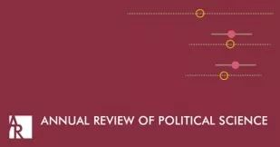

收录于合集

作品简介
【作者】 江忆恩(Alastair Iain Johnston)，美国哈佛大学教授，被誉为“美国新生代中最出色的中国问题专家”，其研究领域集中于社会化理论、身份与政治行为和战略文化等。
【编译】 李源（国政学人编译员，吉林大学公共外交学院）
【校对】 曹鹏鹏
【审核】 贺凡熙
【排版】 贺奕
【来源】 Johnston, A. I. (2012). What (If Anything) Does East Asia Tell Us About International Relations Theory?. Annual Review of Political Science, 15 (1), 53-78.
期刊介绍

Annual Review of Political Science自1998年出版以来，其内容涵盖政治理论和哲学、国际关系、政治经济学、政治行为、美国和比较政治、公共管理和政策以及方法论等。根据 Journal Citation Reports显示，其2018年的影响因子为3.915，在176种政治科学类期刊中排名第6位（6/176）。
东亚能给国际关系理论带来什么？
What (If Anything) Does East Asia Tell Us About International Relations Theory?
Alastair Iain Johnston
内容提要
跨大西洋国际关系理论或多或少地忽视了东亚的国际关系。这一相对忽视以不同的形式表现出来：分析中未考虑东亚案例、考虑东亚案例但对其进行错误编码和理解、又或者考虑东亚案例但未注意到这些案例有悖于既有研究成果。本文回顾了东亚三个重要理论化领域的相关文献：冲突的结构理论、制度设计与效力、历史记忆，并认为对这一地区（或其他地区）的忽视可能会给跨大西洋国际关系造成两方面的问题：数据错误或数据不准确、遗漏变量偏差(omitted- variable bias)。
文章导读
一、忽视东亚有多大的影响？
忽视东亚的案例可能意味着当今跨大西洋国际关系理论的一些主要观点面临着外部有效性问题(external-validity problems)，考虑这些案例则可能对目前的国际关系理论提出更高的要求。
忽视某些案例主要会影响定性案例研究(qualitative case studies)。虽然许多国际关系的大样本数据集(large-N database)采用了来自东亚的案例，但这些大样本研究仍存在与地区相关的两个问题。 第一，所采用的案例可能无法支撑普遍性观点。在一些研究中，采用或忽视东亚案例并不一定会挑战既有理论，但这些理论却可能无法解释（东亚）亚洲的事实。 因此，对东亚（或其他地区）的案例进行更为仔细的检验能够揭示某些理论的范围条件(scope condition)。 第二，在大样本研究中对东亚案例的编码(code)可能会与现有证据不一致。 相比于欧美的案例，东亚案例更容易出现编码错误。因此，这要求具备足够的地方性知识(local knowledge)。
吸纳这些被忽视的地区具有两点潜在益处。 第一，吸纳东亚或其他地区可以为某些问题的争论提供更为细致的经验支撑，有助于明确哪种理论、假设和观点更令人信服，也有助于确定理论的普遍性推论是否具有清晰明确的时空界限，例如在国家是否会采取制衡行为、权力转移或军备竞赛是否会增加战争爆发的可能性、相互依赖是否能减少冲突、以及战争爆发是否源于谈判失败等重要问题上。第二个益处则是对于那些有着强有力的理论和结论，甚至是铁律的问题而言。最明显的便是民主和平论以及领土和战争的关系这两个问题，对东亚的探索能够对这些结论的普遍性进行有效的检验。
二、冲突的结构理论与国际秩序
结构现实主义预测弱国会在军事上制衡强国。作为结构理论之一，权力转移理论预测当崛起国是修正主义国家，且其与主导国之间的权力差距足够小时，崛起国与主导国会陷入严重的军事冲突中。理性主义战争理论也认为崛起国无法做出不挑战霸权国的可信承诺，因而会增强双方的冲突进程。然而， 这三个结构理论并不完全适用于东亚地区 ， 东亚国际关系学者在这一点上有着相当的共识。
东亚的国际关系研究给权力转移理论提出了一个仍有待探究的问题： 显示权力转移正在发生的有效且可靠的指标是什么？要显示（崛起国与主导国）在GDP、军费开支或国家能力上日益缩小的差距相对容易，但想显示出（崛起国）对现状的不满并非易事。
许多东亚的国际关系学者否认均势理论的预测正在东亚地区上演，大部分东亚国家并未制衡中国。学者们对此提供了多种解释， 例如对古代中国相对良性的等级制的历史记忆使得制衡没有必要(Kang 2003, 2003/2004, 2009a,b)；追求其他国家利益使得制衡成本过高(Kang 2009a, Chan 2010, p. 297)；由于诸多社会问题、高昂的环境污染以及美国霸权在东亚的维持，中国崛起仍面临诸多变数(Beeson 2009)；尽管与海上邻国存在领土争端，但中国相对成功的战略使得周边国家相信中国没有霸权意图(Kurlantzick 2007, Chanborey 2009)。东亚国家，尤其一些东南亚小国并未采取制衡措施，相反它们同时采取了一系列不同的战略：如在经济与政治上接触中国；通过制度约束中国；借助美国在东亚的存在获取保障 (Schweller 1999; Ciorciari 2009; Breslin 2010, p. 725)。饶义(Denny Roy)认为东亚国家正在实施“低强度制衡”与其他类似的折中战略，这与其他学者所称的“软制衡”相类似(Pape 2005 and Paul 2005)。
同时， 许多东亚的国际关系文献开始超越于“制衡缺失”这一发现，认为国家行为的类型甚至比均势理论的批评者所认为的更为多元。制衡、追随与安抚并非是国家面对大国时所有的战略反应。 跨大西洋国际关系中对大国行为的讨论局限于这三种选择，但对东亚的研究增添了更多的国家行为选择，例如接触、对冲与保险策略(insurance)。
当然，也有学者支持冲突的结构理论。金宇祥(Woosang Kim)相信权力转移是可能的。米尔斯海默(Mearsheimer)与Nicholas Khoo分别从进攻性现实主义与防御性现实主义的视角，认为制衡在东亚地区已经存在。贺凯将制衡的概念扩展至使用制度来约束强国。但作者认为这一类观点并不占主流。
东亚国家行为的多样性使得一些学者对国际关系史中的无政府状态与等级制进行理论探讨。康灿雄(David C. Kang)与凯利(Robert E. Kelly)认为从15世纪到19世纪，东亚国家间关系的特点是以中国为中心的儒家等级制度，这一等级制创造了一个比欧洲的威斯特伐利亚体系更为和平的秩序。 具体来说，康灿雄认为朝贡制度维持着这一等级制的合法性，其除了提供涉及贸易的经济利益外，还使主导国享受着来自其他国家象征性的从属地位，其中主导国对从属国的国内政治采取了或多或少的不干涉态度。地位对主导国和从属国都是重要的利益，前者作为合法性的普遍来源而获得地位，后者则作为合法的地方统治者而获得地位。凯利则强调儒家文化所提供的共同身份对维持该地区长期稳定的和平的重要作用。
虽然有学者质疑这种良性等级制(Johnston 1995, Wang 2011)，但对于国际关系中的等级制，康灿雄和凯利提出了一个比戴维·莱克(2009)更为折中的理解。 他们指出在以中国为中心的体系中，主导国与从属国都获得了地位与合法性，而不仅仅是安全或经济利益。中国可能无法为体系内的一些国家提供足够的安全保障，但将合法性授予给从属国间接上有助于这些国家的内部或外部安全。此外，有学者认为莱克所提及的“契约(contract)”也不仅是物质的，而且是意识形态上的，是基于共同价值观且被深深内化的(Kelly 2011)。理性主义的契约观点模糊了社会化、内化与习惯化的过程，而这些过程会影响主导国与从属国之间“契约”的维持(see Phillips 2011)。
东亚国际关系史也表明可能存在其他形式的类似于朝贡体系的更为松散与地方化的等级秩序。 东南亚的曼陀罗体系(mandala system)便是其中之一，这一体系具有封建欧洲体系与较低等级性的威斯特伐利亚体系的共同特征，但大国之间的领土边界并不像灵活与扩散性的意识形态与观念边界那样重要。朝贡体系与东南亚的曼陀罗体系（在一定程度上）可以同莱克的等级制案例（冷战期间与冷战后的美国）进行有益的比较，来考察等级制得以创立、维持与瓦解的机制。
相比于跨大西洋国际关系理论，东亚国际关系研究者更重视国际关系中的文明叙事。 有学者认为对文明的理论化为理论化小国作为文明互动的桥梁提供了空间(Shih 2010)。一些中国国际关系学者正在寻找可能会成为中国国际关系学派基础的“大概念(big idea)”，对文明秩序原则的研究便是其中之一，例如基于儒家社会和谐理念的等级制度规范国家间关系的“天下(all- underheaven)”这一概念。卡赞斯坦认为这些都是对文明进行理论化的有益探索，但在很大程度上，关于文明作为行为体、秩序复合体与身份建构的讨论缺少因果或构成性机制。
庇护关系(patron–client relations)是另一个研究主题。传统与当代东亚秩序中权力与地位的巨大不对称凸显了从属国为减少物质权力的不对称可能采用的“弱者武器”。跨大西洋国际关系文献中对小国权力的探讨要么过时要么有待深入挖掘。 国际关系中的一般假设是：随着主导国获得更多的物质权力，这将转化成（对从属国）更大的影响力。但东亚经验却表明事实（或至少这种假设的适用条件）并非如此。朝贡制度赋予了从属国大量的内部与外部自主权来换取它们文化上象征性的服从。冷战时期美国的同盟体系表明当主导国陷入存在性矛盾(existential conflict，不能可信地威胁收回支持)时，从属国会具有更多的内部自主权，并可能会刺激危机发起者以确保主导国被更强的对手所牵制。在中苏同盟体系中，中国在意识形态与权力的竞争中获得了更大的影响力与自主权。东盟经验也表明了小国如何塑造各国的制度安全议程，并从潜在对手中获取利益(Ba 2009)。 因此，东亚经验可以拓宽学者们对小国向强国施加影响力的条件的思考，并同现有关于欧盟小国的文献进行有益的比较。
**
**
三、制度
“东盟方式(ASEAN Way)”这一概念是许多文献分析东亚制度的出发点。国家间关系的东盟模式常常主导该地区的制度构建。 阿查亚是最早关注东盟方式的学者之一，他认为东盟方式具有高度谨慎、非正式化、实用主义、权宜之计、建立共识与非对抗性的谈判方式等特征，这与西方多边制度谈判中的敌对姿态与法律决策程序形成鲜明对比。东盟安全合作方式的最重要特征或许在于其对非正式化与避免过度制度化的偏爱。因此，东盟方式被认为不同于欧洲的制度化。
许多学者认为跨大西洋国际关系理论对评估这些（制度）特征的效力并无太多借鉴。 对于这两个地区制度差异的起源，一些学者认为欧洲与东亚各自自由与非自由的一体化方式有助于解释欧盟与亚太经合组织之间的差异。他们认为标准的功能主义无法解释欧洲与东亚两个地区“政治理性”的差异。 例如，基于社会学理论，Beeson Jayasuriya(1998)认为自由理性驱动着欧洲一体化，而重商主义理性（或以国内安全为中心）则驱动着东亚一体化。
一些学者则从一体化进程，而非一体化程度的角度分析地区间差异。 例如，卡赞斯坦认为相比于欧洲正式的政府间制度及其目的，资本主义网络推动了东亚的一体化。这些网络在脆弱国家，尤其是某些东南亚国家中运行，并跨越了这些国家。这些国家往往坚决捍卫主权，因而并未出现高制度化水平的一体化。这些强调制度差异的观点也根植于这一事实：在很大程度上，东盟而非主要大国主导了该地区的多边主义。由于多种原因，中美日等国的主导地位均受到制约。当然， 也有学者指出随着时间的推移，欧洲与东亚制度上的差异已有所改变。 一些学者关注东盟对欧洲一体化形式（而非内容）的模仿；还有一些学者则关注APEC和东盟在改变严格的不干涉内政上的努力。
尽管在如何描述与衡量东亚制度的效力这一问题上存在一些争议， 但 自冷战结束以来，虽然结构性的不确定因素不断增加，这一地区却维持了和平。一些学者推测东盟方式给东盟内部及东盟与其他国家带来了和平， 而与相互依赖、美国权力与自由政体无关。例如，有学者认为相对于东北亚，东南亚表现出了更深的区域认同，因而有助于其调节领土争端(Ryu 2012)。
除此之外， 对东亚制度的研究为解释制度形式及其目的的关键——规范融合与规范本土化提供了理论启示 (Acharya 1997, 2009; Capie 2008)。许多研究规范扩散的文献聚焦于“观念倡导者(ideas entrepreneurs)”和国家被教授新观念的范围条件。但阿查亚(Acharya)和凯皮(Capie)指出这些文献要么将规范扩散的目标与接受者视为被动性的，要么将其视为战略性抵抗的能动者。对东亚制度的研究有助于填补关于规范扩散研究的欠缺。其次， 对东亚制度的研究也强调了社会、种族与意识形态网络在制度发展中的作用，例如一轨半对话或二轨对话、认知共同体(epistemic communities)。
这些研究都有待进一步的探索。 作者认为关于东亚的文献正在构建一项在跨大西洋国际关系中仍着墨甚少的议程，这一议程主要聚焦于各种官方、半官方和非官方跨国网络中的信息流动与社会联系的微观进程。
基于卡尔·多伊奇(Karl Deutsch)和其他学者在20世纪50年代的研究， 关于东亚的文献也详细地探讨了安全共同体的形成过程。同时，在东亚国际关系研究中，关于冷战时期的同盟制度也存有诸多争论。问题之一在于为何美国在东亚主导了双边同盟，而在欧洲却发展出多边同盟。 作者回顾了三种不同的看法：车维德(Victor D. Cha)认为关键变量在于附属国修正主义偏好的程度，相比于多边同盟，双边同盟能够最大限度地防止“被牵连”。汉默、卡赞斯坦与凯皮(Hemmer, Katzenstein, Capie )认为美国决策者的种族主义观点是影响其评价多边同盟可行性的关键因素，即美国主要的决策者并不把非白种人的亚洲人视为平等伙伴。阿查亚则从需求出发，强调东亚国家认为多边同盟并无太大价值。这些不同的观点是解释（安全）制度设计的重要创新。 其中，汉默、卡赞斯坦和凯皮三位学者的观点也引起了对国际关系中种族主义问题的关注，而这一问题在之前的跨大西洋国际关系中并未得到充分探讨。 种族主义看法在许多国家的国内政治中起着重要作用，因而没有理由认为种族主义看法不会在国际舞台的政治行为上扮演重要角色。例如，有学者就展示了种族中心主义可能有助于解释美国在移民政策、外国援助与自由贸易等方面的个人偏好。
总体而言，对东亚制度的研究为跨大西洋国际关系的理论化做出两点贡献。 第一，它表明制度设计远比之前所认为的要多样化，因而能够对制度的起源与效力进行更为折中的理论化。第二，它提出了一些迄今为止仍有待研究的问题，例如身份差异与种族在行为体对制度设计与目的的偏好中发挥的作用。
四、历史记忆
许多东亚国际关系学者都强调历史记忆对外交决策的约束作用。无论是基于教育制度和大众文化的民众社会化，还是出于领导人自身将历史记忆内化，都存在一种共同观点，即对19和20世纪帝国主义的记忆阻碍了政治合作。尤其是对日本殖民主义的记忆持续困扰着中韩两国和日本的政治关系。 例如，贺凯展示了始于20世纪80年代，中国如何出于政治和外交目的而有意培养对日本殖民主义的历史记忆，以及到21世纪初这些记忆又如何反过来限制了中日关系的改善。有学者假设历史记忆会被后期的政治发展所放大，即弱势政权会出于合法性的目的培养历史记忆。林德(Jennifer Lind)指出，在某种程度上，国家会从某国如何处理历史记忆中推测其意图。她利用德法、日韩两对案例展示了历史记忆在推测该国善意或恶意意图中的重要作用。米勒(Miller)认为历史记忆，特别是殖民主义的创伤，对中印两国的外交政策取向具有同构效应(isomorphic effect)，具体体现在对受害者身份的强调、对主权的敏感性与对领土宣称的强硬捍卫上，他指出其他大部分的经历过欧洲殖民主义的受害者也都具有这些外交政策特征。在某些情况下， 历史记忆和领土争端是相辅相成的。总之，至少在东北亚，历史记忆的持续存在及其对他者敌对甚至种族主义形象的培养是构建安全共同体的最大障碍之一(Weber 2011)。
然而，为什么历史记忆对外交决策者，特别是在非民主国家是重要的？ 这仍是一项有待探究的问题。 这个问题必然要求对公众舆论和国家行为进行更多的思考。对非民主国家中公众舆论发挥作用的一般条件仍缺少系统性的检验。 陈洁仪(Jessica Weiss)特别关注了反日情绪在中国外交政策中的作用。但她认为公众舆论并没有限制外交政策的选择，反而在与其他国家的双层讨价还价博弈中，为领导人提供了打“绑手”牌的额外选择。有关历史记忆如何在中国或该地区其他威权国家的外交决策中发挥作用的经验证据并不多见。针对具备或多或少的制度化领导人更替的一党独大或威权政体，有学者提出了三种（公众舆论与政策制定的）假设( Johnston & Stockmann 2011)：第一，当领导层内部的政治斗争异常激烈时，顶层的权力竞争者会对公众舆论更为敏感，因为这可能会成为政治竞争的有力工具。第二，当最高领导层认为自身面临合法性危机时，会对公众舆论更为敏感。第三，历史记忆会通过减少对威权统治及其政策的潜在社会反对，影响威权政体领导人的政策选择。这些假设仍有待检验，与此相关的结论也将是暂时性的。 对威权国家外交政策的研究将会成为东亚国际关系学者做出贡献的领域之一。
除此之外， 有关历史记忆的文献也对民主和平论的范围条件提出了挑战。 过去20年间，印度尼西亚、台湾与韩国相继完成了民主化。但一些文献却对民主化是否促进了和平持怀疑态度，这在某种程度上便是历史记忆持续存在的结果。韩日关系便是探究民主和平机制的一个有趣案例。虽然同为民主国家，但对日本殖民主义的历史记忆仍存于韩国政治之中。因此， 是历史记忆胜过了民主，还是民主从本质上抑制了冲突性的历史记忆？ 有学者认为尽管中韩两国政体不同且中国更加强大，但出于历史记忆，韩国认为日本比中国更具威胁性(Midford 2008)。
对许多东亚国际关系学者来说，历史记忆是国家间冲突、持续的安全困境与领土争端的一个关键来源。总的来说，历史记忆作为一个独立变量在当今跨大西洋国际关系的理论化中的地位并不那么突出。冲突与和平研究中的大样本研究在很大程度上忽略了记忆、民族中心主义或民族主义对外交政策偏好和国家行为的解释。这反映了跨大西洋国际关系理论所面临的变量遗漏问题。
五、结论
作者希望“把东亚引进来(bringing East Asia in)”将能解决主要争论、实现研究突破，并推动跨大西洋国际关系在拉卡托斯意义上的理论发展。作者最后提出了三点结论：
第一，我们无法完全确定对东亚国际关系的探究是否会加强、削弱、补充抑或挑战跨大西洋国际关系理论的发展，这需要东亚国际关系学者与跨大西洋国际关系学者的共同努力。 换言之，“把东亚引进来”不仅是东亚国际关系学者的责任，更是整个国际关系学界的责任。
第二，探索东亚国际关系强调了地方性或区域性知识对普遍性理论的重要性。在过度普遍化研究发现的努力中，地方性知识往往能够揭露其最致命的缺陷。 对普遍性的探索需要地方性知识，但也可能会受到其限制。
第三，尽管对东亚国际关系的研究可能更多是以理论借鉴而非理论生产为特征，但其能够为跨大西洋进行更大的理论创新提供平台。如本文所展示的，在权力结构、制度、威权国家外交政策的制定、身份差异、种族主义、历史记忆与社会联系等方面，东亚国际关系都可以提供更多的经验证据。这些并非是东亚国际关系所独有，跨大西洋国际关系也并非完全没有。但这些问题在理论和经验上都是跨大西洋国际关系最缺乏探索的问题。因此， 地方性知识不仅减少了用“错误行为体(wrong actors)”、“错误数据(bad data)”与“数据缺失(missing data)”进行理论化的可能(Lemke 2003, p. 132)，也减少了遗漏重要变量与解释因素而进行理论化的可能。
_ ** _ ** _ ** _ 本文由国政学人独家编译推荐，文章观点不代表本平台观点，转载请联系授权。**__